春休みサーキュラーデザインプロジェクト 制作過程
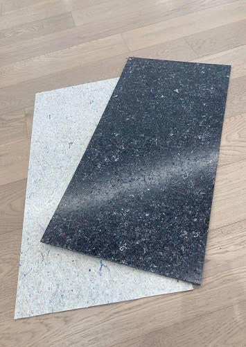
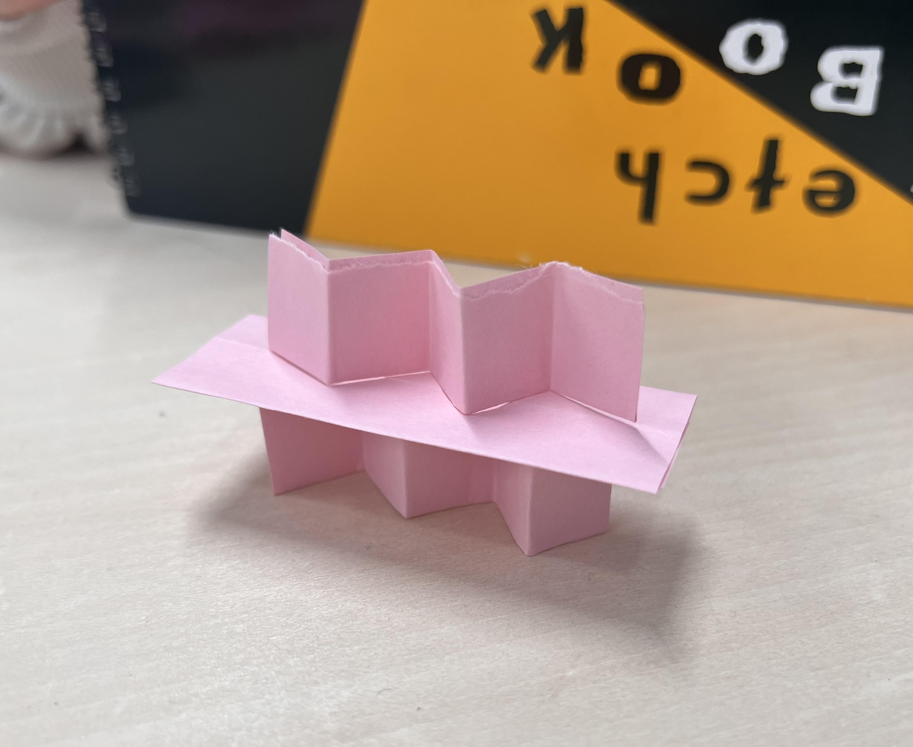
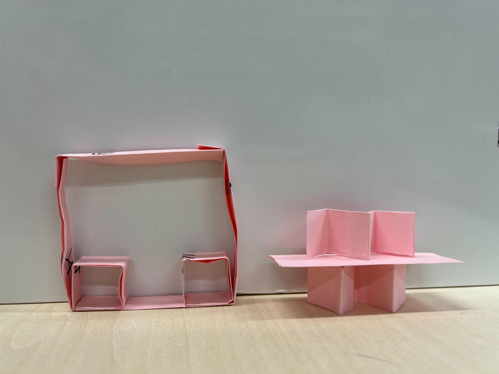
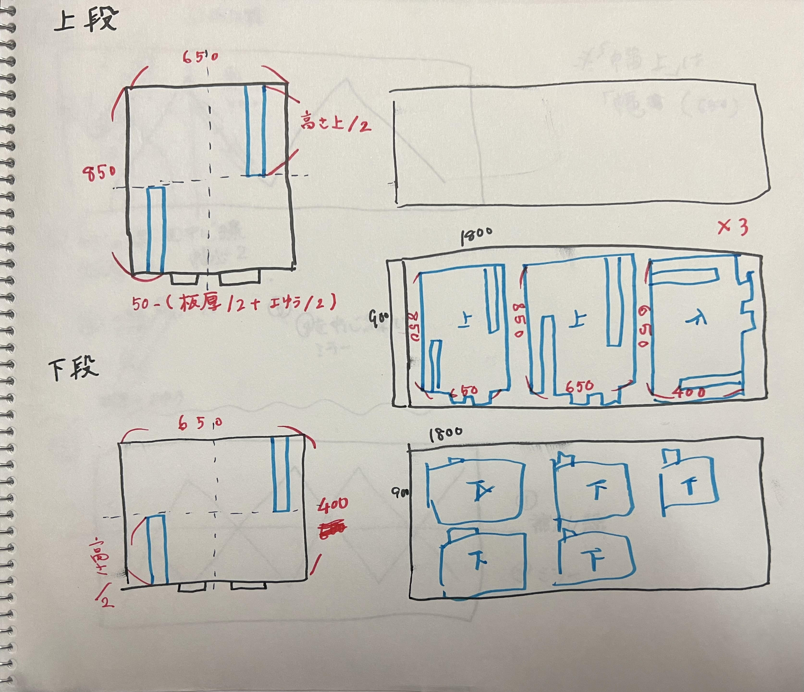
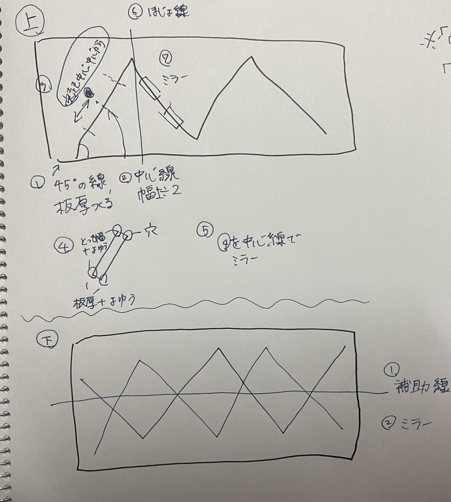
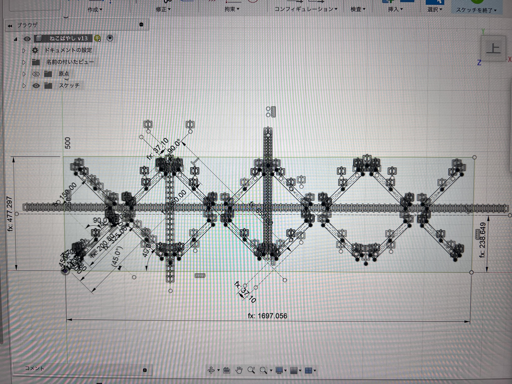
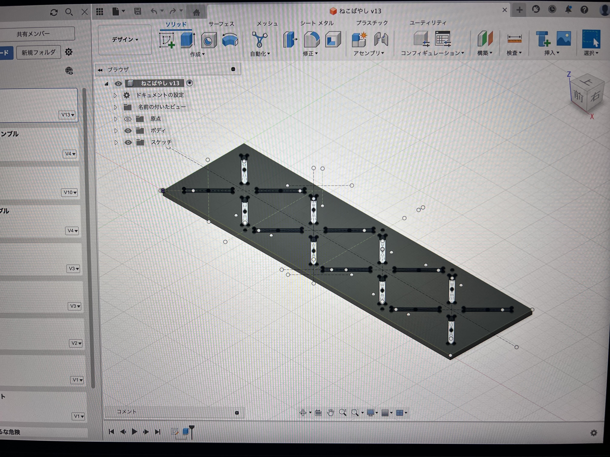
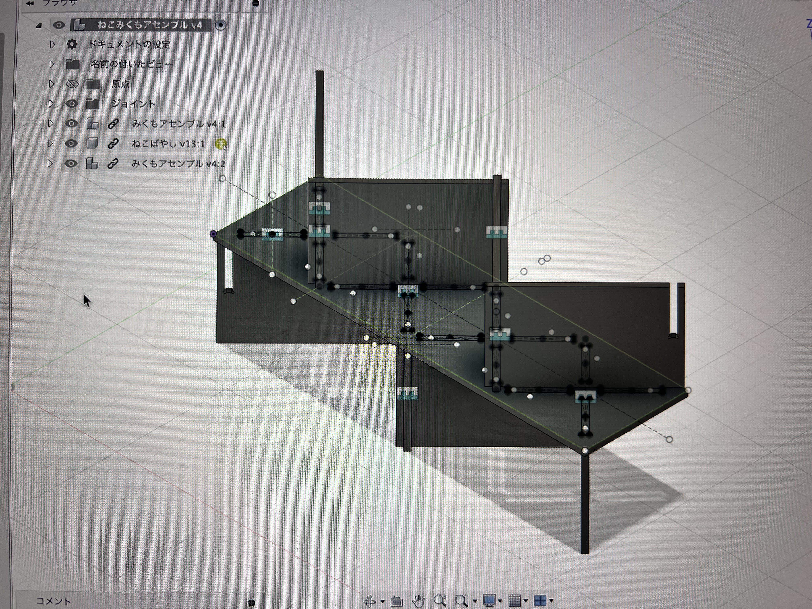
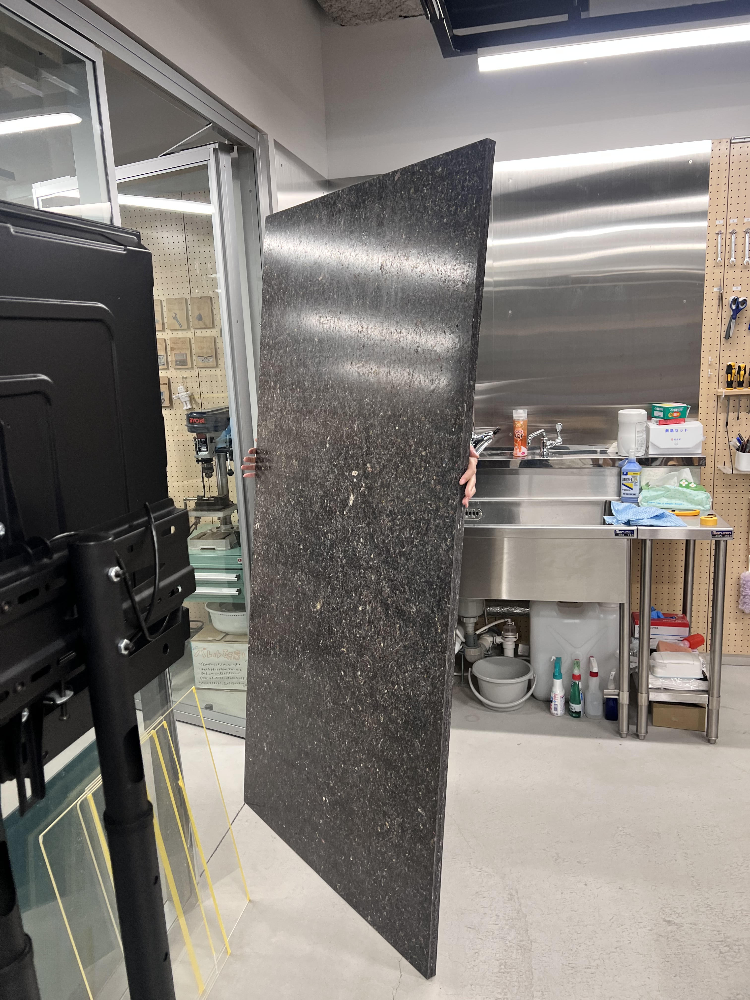
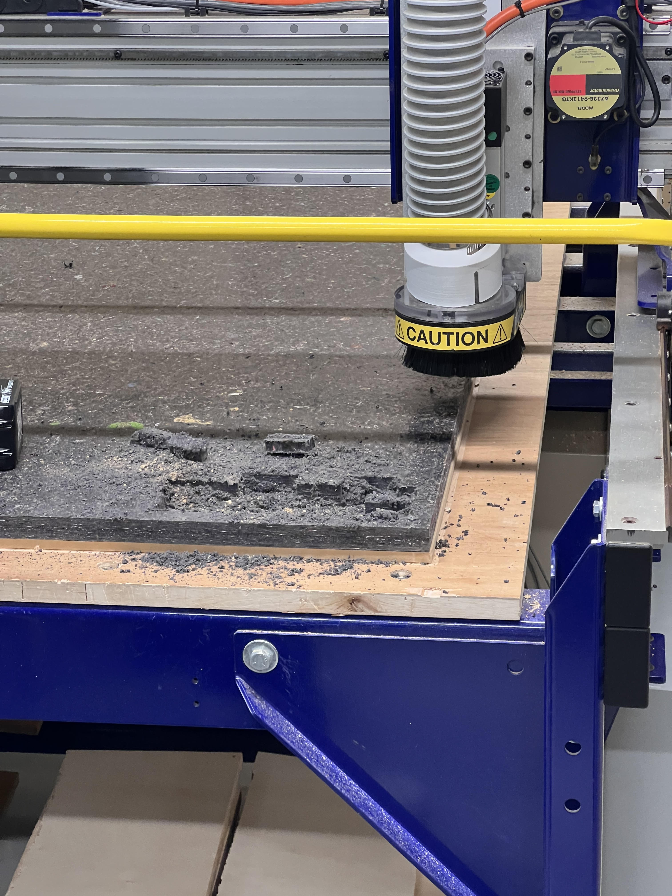
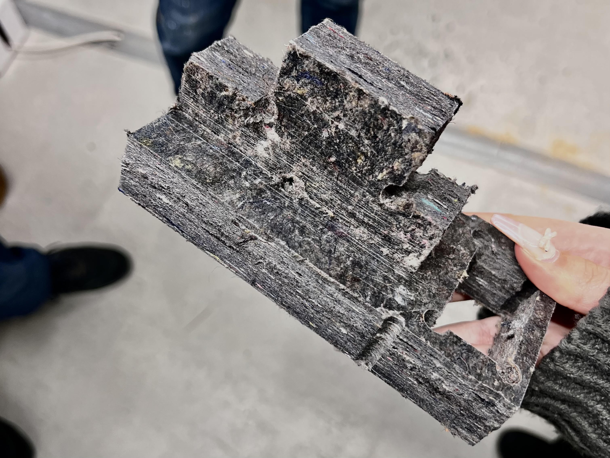
デザイン案をかためるにあたって意識したポイント
①デザイン性と機能性
・全方位覆ってしまうデザインは、落ち着く個人スペースにはなるが、オープンスペースに置くと浮いてしまうので、
厚紙を使って、前・横・後ろのどこが囲われていると安心感を得られるのか、圧迫感を感じないのかを試しながら、ビジュアルの良さも考慮して考えた。
②限られた材料の中でから十分な大きさで作る
どの案も大きさがあったので、まずそれを作ることが可能か、試作する余裕を残せるのかなどをよく考えて、できるだけ精密にプロトタイピングをした。
③他の素材を混ぜずに作る
可動式にしたり、箱型のものを作るには、パーツなしでは実現可能性が低く、どう組み立てるのかも最初の時点で考える必要があった。